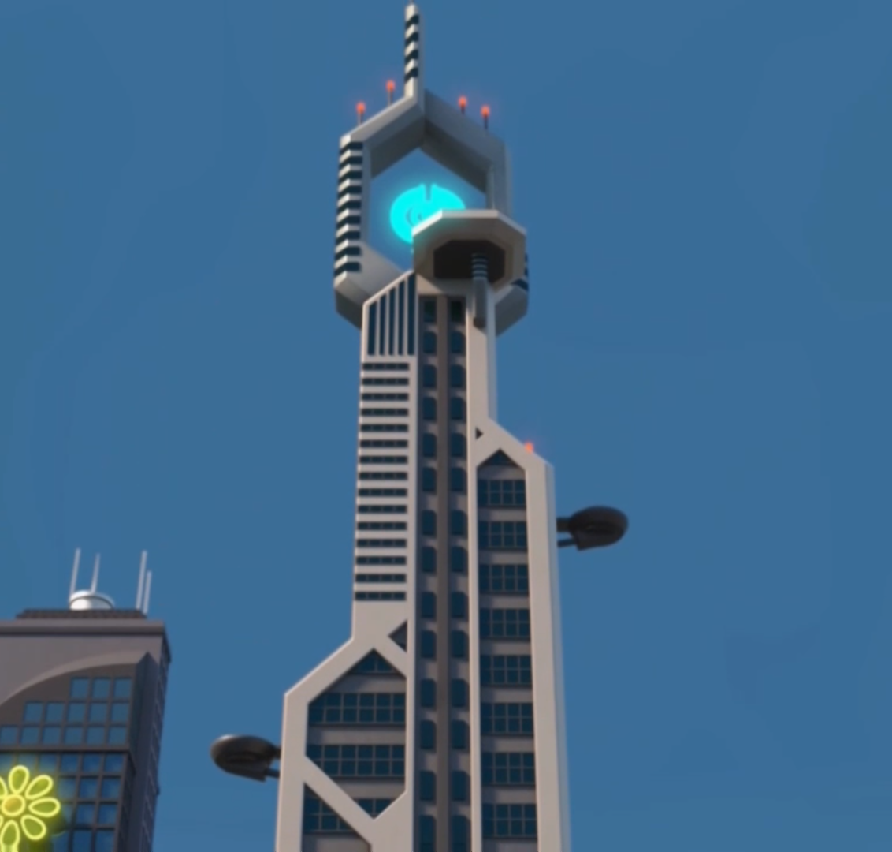
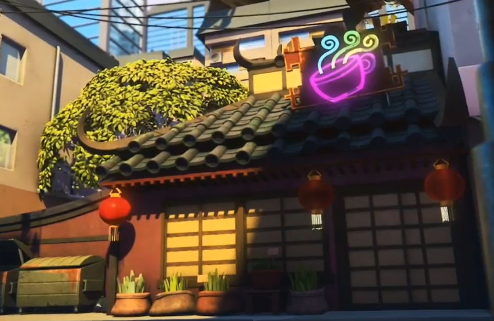
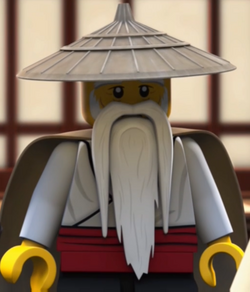
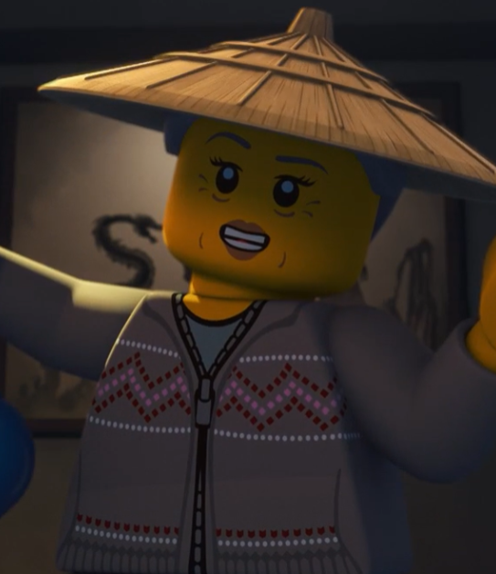

Ninjago Monastrey of Spinjitsu. This is where the ninja train for their battles and also to keep fit so that they don't get sloppy (ahem, Cole). The Next Gen don't train as much as the adults because they only battle in small fights and they only fight in battles with the adults if the battle is super bad and they need all the help they can get. Which is most of the time (cause of Aspheera and Tentacles and beings like them, duh)
This is where Pixal's father (aka maker) lives, and he's always doing something for the ninja. Like always. The Next Gen usually come here because they need to help update Pixane with her robotic body (cause she a nindroid, duhhh). The Next Gen also sometimes train here because Dr Borg has got some pretty neat training equipment. He's also a very good friend, and he's pretty much like a grandpa to all of us, cause he joins in on the gossip. Lol, our academy has too many teachers.
Mystake's Tea Shop is where Mystake's Oni re-live body lives. She's technically dead, but not. She's one of the teachers who teaches the Next Gen with our spirituality. Only Jaya, Cyle, and Ika are interested in that type of stuff. The rest just sit around for the tea.
This is our strategy teacher. He's also Pixal's father, and Pixane's grandfather. He teaches us a lot of maths and strategy skills, which can sometimes be painful, but he's a good bloke, so we don't complain.
This is Master Wu. He's our main teacher, the one who trained us and helped us unlock our elemental powers. We weren't born with them, and the Next Gens' elemental powers are somewhat related to their parents' elemental powers. Master Wu is like, really old, but he's still strong. So don't tick him off. Seriously.
This is Mystake. She gives us tea and teaches us how to handle stressful situations. And she also tells us our fortunes. Only 3 of the Next Gen are interested in that kind of stuff, so she isn't a big hit. Half of us only come cause of the tea.
Hi everyone, I'm Cyle Brookstone. I'm Cole and Vania Brookstone's son, and I have a twin sister called Lory. We're both 16. Erm, I'm not very good with intros and sutff, but um...I like cake. Like a lot. Just ask Lory. I'm also the Elemental Master of Lava. It's cause my dad still wanted to be the Elemental Master of Earth, and NOT give his power up, so instead he gave half his elemental ability, and I became the "Lava-boy". I'm also the Cider Ninja, cause thats the color of my Ninja Suit. Honestly, I can't believe my color is Cider. Jaya and Kailor LOVE making jokes about it.
Hi peeps!!! My name is Ika Garmadon. My elemental parents are Lloyd and Harumi, but my real parents are the ones back home in Sydney. Elemental parenting is pretty neat, but I ain't gonna explain it. I'm 16 and pretty good at singing. Singing doesn't help when I'm fighting, though. I'm the Elemental Master of Sense, and no, it's not common sense. I mean like, what you feel, what you taste, what you think. You know, like body sense? Well, my powers pretty nice, cause I can control your senses. And the best part is, I can sense your thoughts. It's a bit like reading minds, but not exaclty. I'm also the Silver Ninja, and the only recruit to have Elemental Parents.
Hello, readers! I'm Jaya Walker, youngest son of Jay and Nya Walker. My Elemental Power is Light. Yeah, I'm really fast. Not like the Elemental Master of Speed fast, but pretty fast all the same. I'm 17 and I'm also the Navy Ninja. Look, all the ninja are pretty much color coded, so it doesn't really matter what our elemental power is, it's the color that sticks in peoples heads. My light can blind you so, watch out. Heh lol I love saying that. 'K bye.
Is it just me, or are we getting sorted alphabetically?? We are, aren't we. Oh no. Um, hi, I guess. The name is Kailor. Its really sad cause most of us are named after our parents. Like our parents names got mixes together and we're somehow named after that. My parents are Kai and Skylor Smith. See what I mean?? Kai + Skylor = Kailor!!!! Its so sadddd. I'm the Vermillion Ninja. The others hate the color, don't know why. My Elemental Power is Anti-Amber. I can take someones power away from them and use it myself. A lot like my moms, but the other person can't have their power while I'm using it. Kinda sad for them. I'm 17. I also like cheesy jokes. Jaya's full of them. Oh, and Jaya is my cousin. Him and Storm. Cause Storm and Jaya are bros, and my dad and their mom are siblings. Yea, Kai and Nya are siblings, but the only thing the have in common is eye color. Heh. Welp, that's my intro done. NEXT!!!!
Hello, people reading this!! My name is Lory Brookstone, and I'm 16 years old. I have a twin brother (unfortunatly) named Cyle. We are the children of Cole and Vania Brookstone. We're also royalty, cause mom's a queen. And she's the queen of Shintaro, too! But she lives in the Monastry with us, and leaves the kingdom managment to Hailmar. I'm the Elemental Master of Stone, and my color is steel-grey. I hope everyone reading this has a nice day!!! :)
Hi, my name is Milli Violet. Um, just so you know, I do have parents, but they're kinda evil-. Okay, I better explain. I'm the daughter of two of the most evilest people in Ninjago. Ultra Violet and Killow. They tried to make me evil, but I just can't. I hate evilness, and I hate them. I don't have elemental powers like the rest, but I'm still a ninja. My color is Orange. I'm pretty sure that's Miss Skylor's color, but she hasn't declared herself a ninja even now, so I guess Orange is my color.
Hello, viewers. My name is Pixane Julien, and I am the daughter of P.I.X.A.L and Zane Julien. I am the Elemental Master of Winter, and the White Ninja. Lory and Ika are currently shouting at me to write something about myself. I am 16 years old, and I like cooking. I'm quite an accomplished cook. My father, Zane Julien, is also a White Ninja, but he let me take his color. I'm known as the Mini White Ninja to the citizens of Ninjago even though I am 17. That is all I have to say.
Hi, I'm Storm Julien. I'm 19, and the oldest Next Gen Ninja. My parents are Jay and Nya Walker, and I have a little brother. His name is Jaya, and he's pretty neat. yeah, we don't have brother fights. People always think we fight, but we don't. Heh. Anyway, I'm the Ultramarine Ninja and the Elemental Master of Storms. My Storms can get pretty deadly, so yeah.